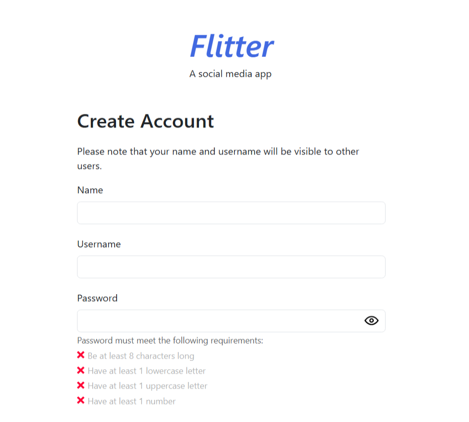

Social Media App
A full stack project called Flitter, which is a parody of a certain social media site named after the 24th letter
of the alphabet. Flitter is a web app with a separated frontend and backend; it offers client-side
rendering and routing, and fetches data from the backend's API endpoints when needed. It offers several of the
features that are included in the social media site it's parodying, such as writing posts, liking posts, following
people, and so on. Many different technologies were used to build this app, including React, Node.js, Postgres, and so on.
Members Only Message Board
A backend project where users can create an account to post messages on a forum.
After creating an account, users can become special members if they enter a secret passcode.
Members have the unique ability to view the author and date of each post, whereas non-members can't.
This project was built using Node.js, EJS, Passport.JS, and uses session cookies for login purposes.

LOTR Inventory App/Database
A backend project that lets you perform CRUD operations on a database dedicated to The Lord of the Rings (LOTR),
written by J.R.R. Tolkien. The data you can work with is based off of races, characters, and realms from
The Lord of the Rings. This project was built using Node.js, EJS, and several other technologies, and uses
server-side rendering.

Shopping Cart
A frontend project that simulates an online store where you can add items to a shopping cart. You can choose
the quantity of each product that you would like to your cart, or you can remove items from your cart as well.
React keeps track of all your cart items, and React Router lets you navigate the site as a single-page application (SPA).
Memory Card Game
A frontend project based on a memory game. The game starts you off with 12 different cards, all of which are
references to weapons found in "The Legend of Zelda: Breath of the Wild". (No worries if you don't know what
Breath of the Wild is, you'll still be able to play the game.) Your task is to select each card exactly once,
remembering which ones you've already picked beforehand. If you pick a card that you've already selected before,
it's game over. This project was built using React, and images are fetched from the Hyrule Compendium API.

CV/Resume Builder
A frontend project that lets you create your own basic resume. You may include things like your work history and
education, with the ability to add multiple entries for each. After submitting the form, React remembers what you
entered, so you can go back and edit any details you'd like. However, none of the data you enter is retained in
a database as this is a frontend-only project.
 ReactJS
ReactJS
 React Bootstrap
React Bootstrap
 Tailwind CSS
Tailwind CSS
 Sass/SCSS
Sass/SCSS
 Vite
Vite
 Vitest
Vitest
 Express.js
Express.js
 EJS
EJS
 SQL
SQL
 Prisma ORM
Prisma ORM
 Postgres
Postgres
 Python
Python